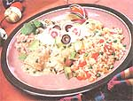
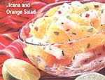

MOTHER'S KITCHEN
...Even in the North.
Before I moved to an area in Illinois with a great local market, I thought that Mexican food was a meat-bean-tortilla thing that I occasionally ate at the nearby shopping mall. And salsa? It was that meek and mild tomatoey bottled stuff used for chip dunking. Fortunately, I left my small Michigan town to discover that ignorance isn't bliss when it comes to Mexican food. Since my arrival, I've eaten from taco stands in neighborhoods where no one spoke English, tortillas were pressed by hand, and delicious salsas were made from ingredients that I couldn't pronounce. I searched cook books and attempted to duplicate this wonderful cuisine, but without much success. So I asked Hispanic friends or coworkers for advice. In my preschool classroom, I asked parents to give Mexican cooking demonstrations. Someone's grandma taught me the secret to making chiles rellenos, another where to buy the freshest tomatillos. The secret to any culture's cuisine lies not only in the ingredients, but in in the method. It's what's been passed down from generation to generation. So I continue to ask questions, and once in a while, I manage to cook something fabulous.
Since Mexican food is regional, ingredients and flavors can vary, and some recipes can be time-consuming. Most of us just want to duplicate what we've eaten at our favorite Mexican restaurant without slaving over a hot mole sauce. Here's Mexican Cooking 101-the recipes are basic, and you'll be dipping into the salsa in no time.
1 whole chicken fryer, about 4 pounds
1 small onion, peeled and quartered
4 large cloves garlic, smashed
5 whole allspice
5 peppercorns
Place the washed chicken in a soup pot, and add just enough water to cover the chicken. Add the rest of the ingredients. Cover and simmer for about one hour, until the chicken is no longer pink (check the thigh meat next to the bone). Remove the chicken from the pot and put on a plate to cool. Strain the chicken broth, and store or freeze in plastic containers. Pick the chicken off the bones, discarding the skin and bones. Place the meat in a container and chill until needed (within 3 days), or freeze with a little of the broth.
1 1/2 pounds tomatillos* (about 12-14)
1 teaspoon oil
1/2 large onion, chopped
1/2 large cloves garlic, chopped
1/2 jalapeno pepper, seeded and chopped (wear rubber gloves)
1/2 teaspoon salt
freshly ground pepper
pinch of ground coriander
1 cup cilantro leaves (use more if you
like cilantro)
Remove the husks from the tomatillos and place in a saucepan, covering them with water. Bring to a boil, reduce to simmer, and cook 10 minutes. The tomatillos will be soft but not mushy. Drain; save a cup of the water, and let cool. In a small skillet, heat the oil and saute the onions, garlic, and jalapeno until they start to brown. Put in a blender with the salt, pepper, and coriander. When the tomatillos are cooled, cut out the core as you would a tomato. Place in the blender with the cilantro, and blend until almost smooth. Taste to see if it's spicy enough. If not, saute and add the other half of the jalapeno pepper. Check the thickness of the sauce and add the reserved tomatillos water as needed. (The sauce will thicken a bit in the refrigerator.) Pour into a plastic container and chill. Use within 4-5 days.
*See " South-of-the-Border Basics "
warmed, cooked chicken
1/2 pound Mexican crumbling cheese, such as queso añejo*
1 package corn tortillas
lite sour cream
avocado slices
Shred, not cut, the chicken into small pieces. Preheat oven to 350°F. Wrap the tortillas in a damp, non-terry-cloth dish towel. Lightly oil the bottom of a casserole dish or baking pan (I use a Pyrex rectangular pan). Pour the salsa into a pie plate or shallow dish. Crumble or grate the cheese into a bowl. Heat the tortillas in the microwave for about 60 seconds, or just until they're warm and pliable. (If you'd rather heat them in the oven, wrap the dish towel in foil first.) Dip a tortilla in the salsa, lay in the pan, and fill with about 1/4 cup of chicken. Roll up and place the open side down. Do the same with the other tortillas, laying them side by side. Spoon a little more salsa across the middle of the enchiladas and cover the pan with foil. Bake about 10 minutes, just until warm, or the tortillas will start to fall apart. Using a pancake turner, remove to the serving plates. Top each enchilada with a tablespoon or so of cheese, a dollop of sour cream, and an avocado slice.
*If not available, grate or shred some chilled Muenster cheese in a food processor.
Why open a can of refried beans when you can open a can of pintos beans and make your own delicious recipe instead? You can also use homemade beans, but the canned are much faster and easier to mash. 1 tablespoon canola oil
1 large onion, finely chopped
4 large cloves garlic, minced
2 medium poblano peppers, * seeded and finely chopped
1 teaspoon ground cumin
2 29-ounce cans of pinto beans, undrained (1 use Preferida brand)
salt to taste (if beans aren't canned)
Heat the oil in a large skillet over medium-high heat. Stir in the onion, garlic, and peppers. Saute until soft, stirring frequently. Add cumin and saute for another minute while stirring. Pour in the beans with the bean liquid. Start mashing the beans with a potato masher or large wood en spoon. (It will probably take about 5 minutes to mash most of the beans.) Leave some beans whole so texture is chunky. (You can use a food processor, but I find that it tends to puree the beans.) Continue to cook beans for about 15 minutes; stir and scrape the bottom occasionally so they don't burn. You may have to reduce the heat a bit; it's okay if beans bubble up while cooking. Beans are done when liquid has cooked down; cook until the consistency suits your taste. Beans will thicken as they sit.
*If poblano peppers aren't available, use a green pepper and about 1/8 teaspoon cayenne pepper.
This is the classic rice that you'll find in your favorite Mexican restaurant. It's best made ahead and reheated in the oven.
2 cups chicken or vegetable stock
1 tablespoon canola oil
1 small onion, finely chopped
2 large cloves garlic, minced
1 small carrot, cut into V4 " cubes
1 cup long-grain white rice, uncooked
3/4 cup canned crushed tomatoes
1/2 teaspoon salt
pinch of cayenne pepper
freshly ground pepper
1 cup frozen peas
Simmer the broth in a saucepan while you prepare the rest. In a large, nonstick skillet, heat the oil on medium heat and add the onion, garlic, carrot, and rice. Stir for about three minutes until the rice starts to get toasty. Stir in the tomatoes and spices, continuing to stir for about another minute. Stir in the hot broth, cover, and reduce heat to low. Simmer for 20 minutes until liquid has been absorbed. Rice will be sticky; check to see if it is sticking to the bottom of the pan. (Rice will be less sticky after it's reheated.) Stir and continue cooking if necessary. When the rice is ready, stir in peas. Oil a square baking pan and transfer the rice from the skillet. Let cool, cover with foil, and refrigerate or set aside until needed. Reheat in a 325°F oven for 15 minutes.
This refreshing, no-fat salad complements your Mexican dinner. If jicama is not available in your neck of the woods, try white daikon radish or kohlrabi.
4 navel oranges (very sweet)
1 medium jicama (about 3 cups)
1/2 cup red onion, finely chopped
1/3 cup lime juice (from 2 limes)
1 tablespoon rice wine vinegar (or white wine vinegar)
2 teaspoons sugar
dash of salt and cayenne pepper
1/2 cup cilantro leaves, finely chopped
Cut the oranges into quarters by cutting through the navel, then peel and section them. Chop the orange sections into 1/4" slices. Cut the jicama into 1/4 " slices. Peel off the skin and cut into 1/4" dice. Whisk the sugar, salt, and cayenne into the freshly squeezed lime juice. Pour over the salad and toss with the cilantro. Refrigerate for at least an hour before serving.
This deliciously sweet coffee is dessert all by itself. Make sure you use a good quality coffee, not the stuff in a can.
4 cups cold water
4 cinnamon sticks
1/3 cup brown sugar
2/3 cup finely ground decaf or regular
coffee (mild-tasting coffee is best)
In a large saucepan, combine the water, sticks, and sugar. Heat to almost a boil, and then simmer for 10 minutes. Remove from heat. Add the coffee, cover, and let steep 5 minutes. Remove the cinnamon sticks. Place a filter in your drip coffee-maker with the pot underneath. Pour the coffee mixture into the filter and let it drain into the pot. Serve immediately or keep warm on the coffee burner. (If coffee is too strong, add some hot water.)
|
Jill Jenkins, of Dallas, tries her hand at the batch of Anne's enchiladas. |
 |
 |